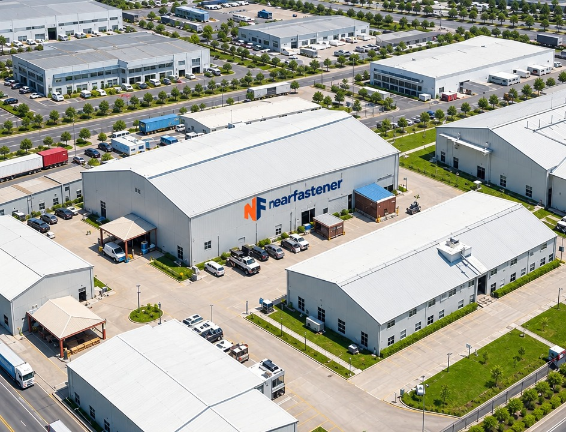
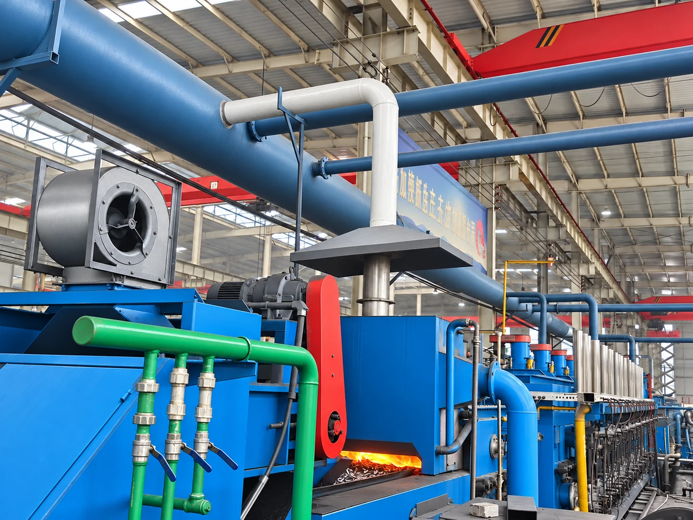
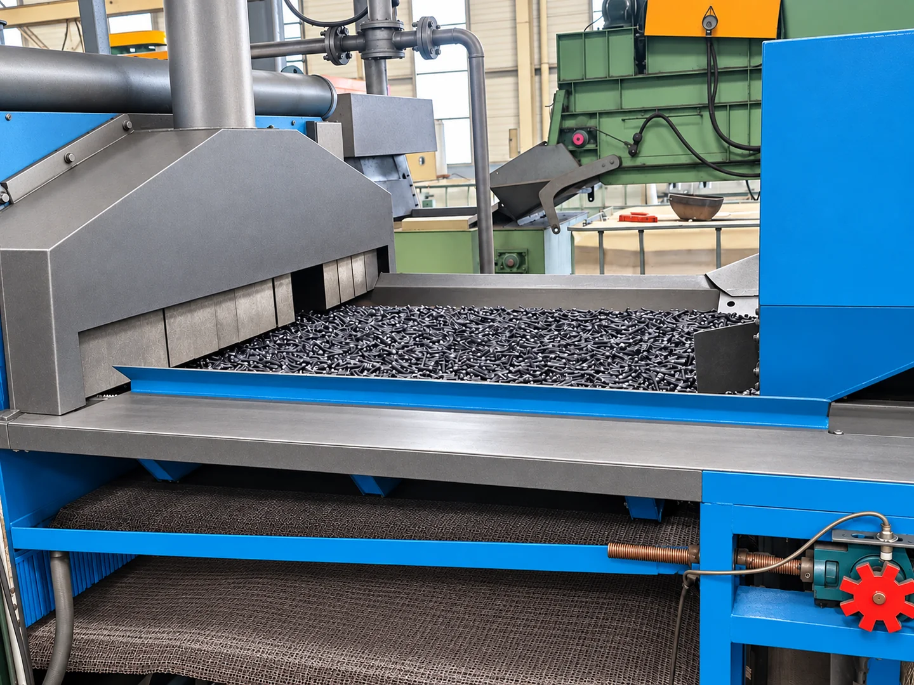
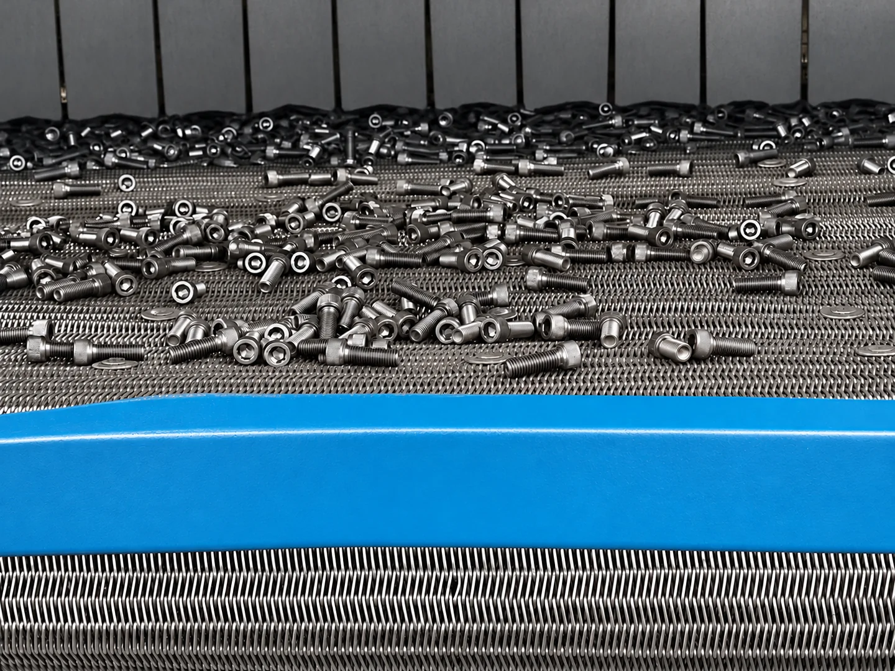
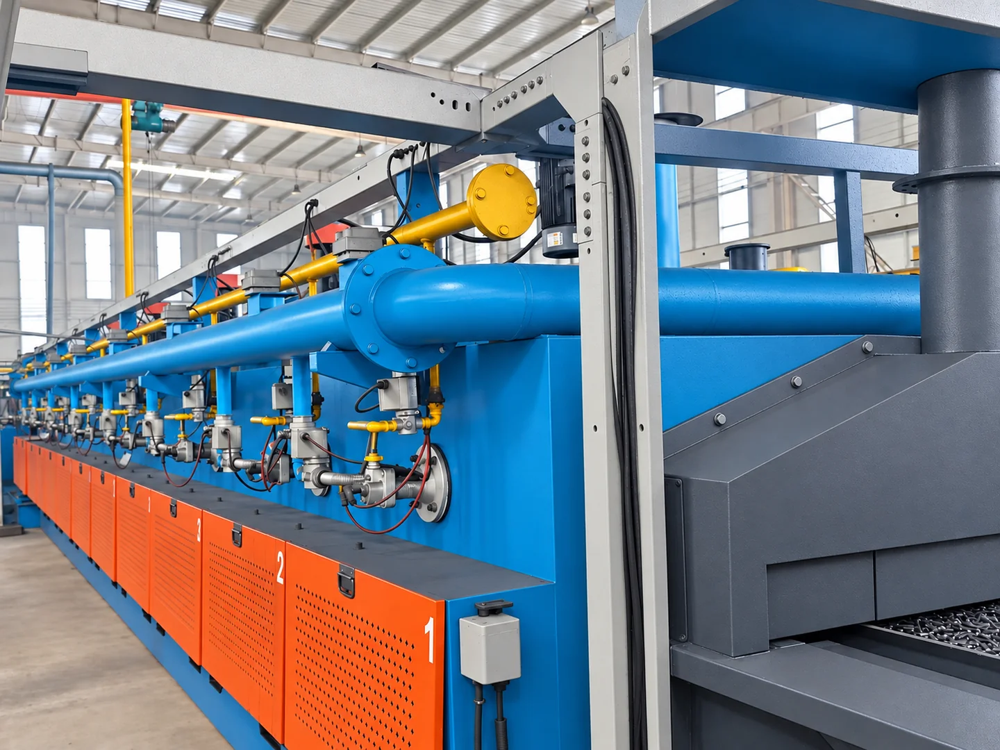
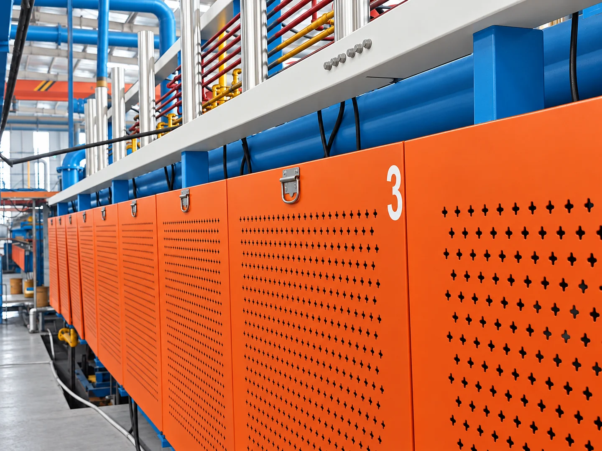
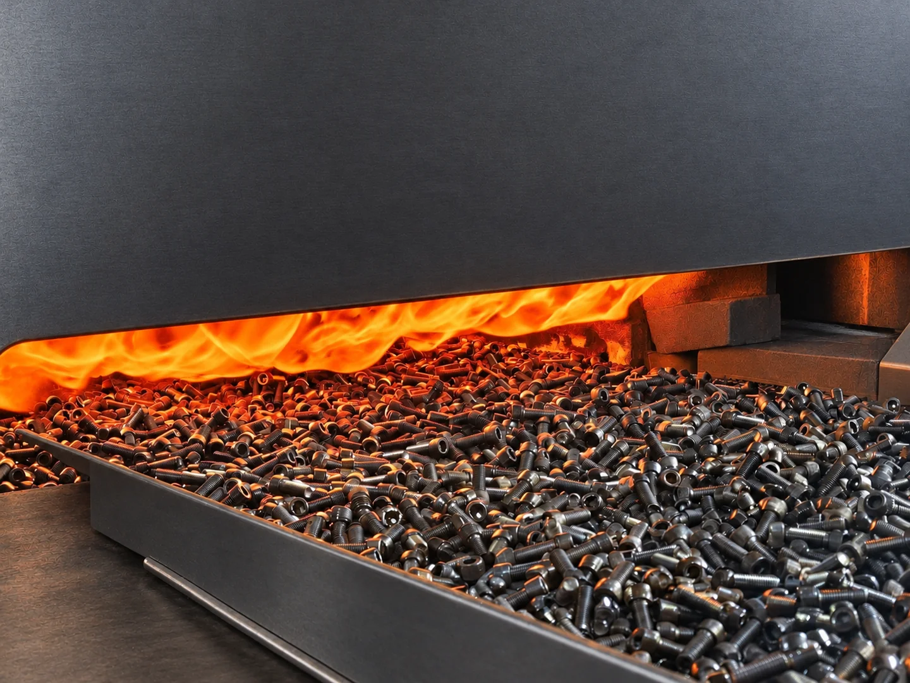
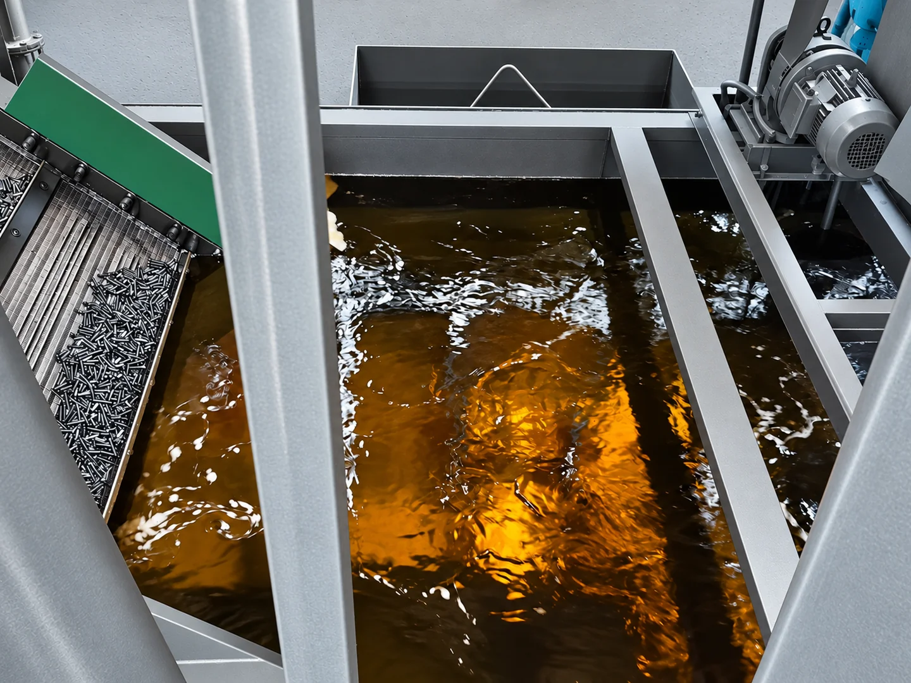
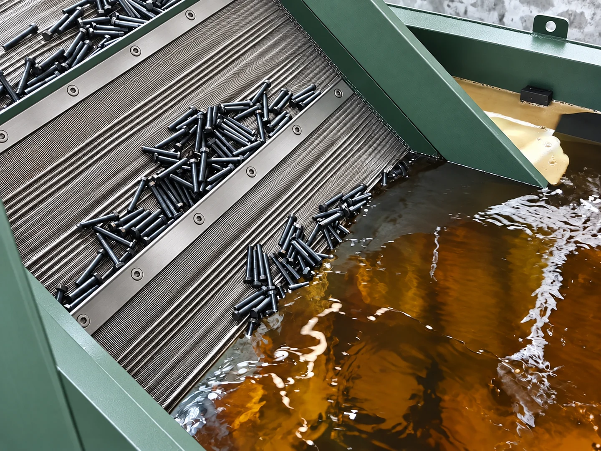
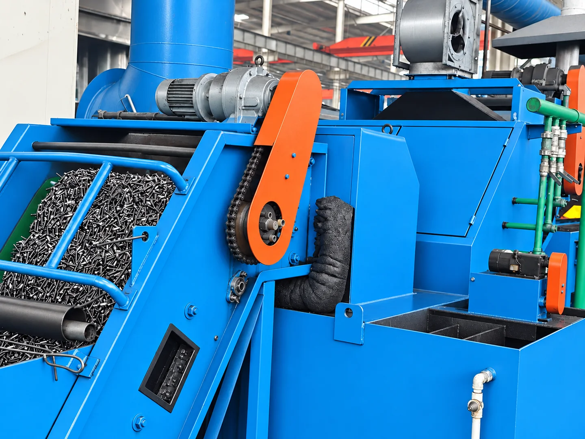

Sobre nosotros
Fabricante de confianza de fijaciones de alta resistencia para aplicaciones industriales en todo el mundo.

Nuestra historia
Near Fastener se fundó en 1991 con un enfoque en la fabricación de pernos. Nuestra fábrica está en la Zona Industrial de Shiqiu, distrito de Lishui, Nankín, Jiangsu, China. Los pernos son nuestro negocio principal, con una amplia oferta para construcción, maquinaria e industria general.
Nuestra historia comenzó en 1991, y fabricar pernos sigue siendo nuestra actividad principal. Desde Nankín exportamos a más de 50 países y ayudamos a los clientes a definir productos y especificaciones para sus proyectos. Aspiramos a relaciones duraderas mediante una comunicación clara, productos fiables y un servicio atento.

Línea de producción de tornillos
Explore la producción de tornillos: carga, transporte, calentamiento en horno, equipos del baño de proceso y transferencia.

Carga y transporte por cinta de malla
Una capa amplia de tornillos se extiende sobre la cinta de malla en la abertura del horno.


Horno y calentamiento
Tuberías, válvulas y secciones protegidas del horno se extienden a lo largo del pasillo del taller.



Baño de proceso y transportador
La vista superior permite apreciar el tanque, la superficie del líquido y el transportador adyacente.


Transferencia entre secciones de la línea
El transportador inclinado lleva los tornillos a través del conjunto de transferencia azul.
Nuestros valores
La calidad primero
Cada producto se somete a pruebas rigurosas antes del envío. Sin comprometer la calidad.
Enfoque en el cliente
Respuesta rápida, pedidos mínimos flexibles y asistencia técnica durante todo el proceso.
Mejora continua
Invertimos en equipos, formación y procesos para mejorar cada año.
¿Quiere saber más?
Contáctenos para visitar la fábrica o recibir un perfil detallado de la empresa.
Contáctenos